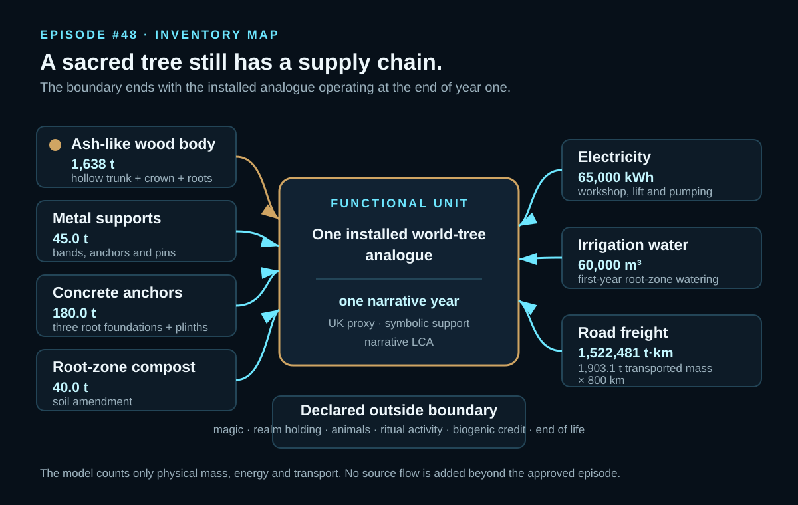
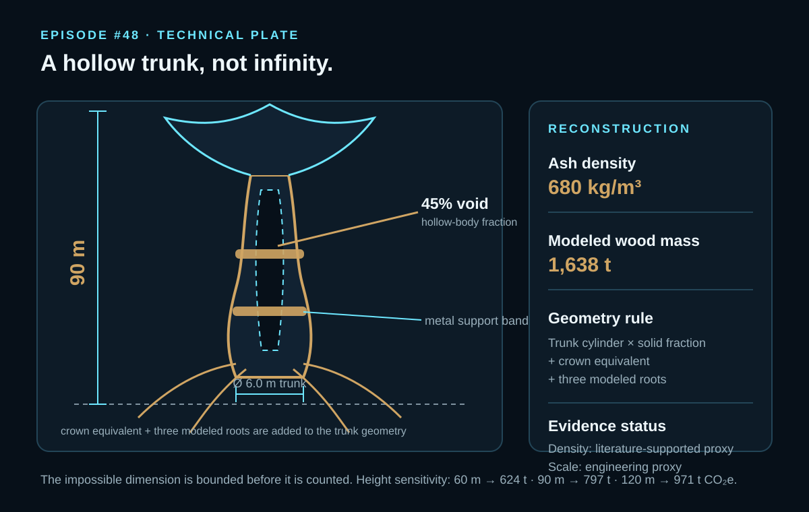
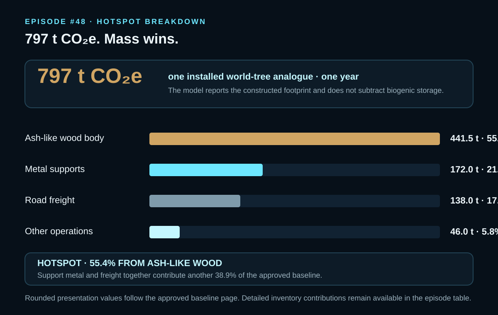

EPISODE #48 · MYTHS & LEGENDS
Yggdrasil
What happens when the World Tree is bounded as a terrestrial material system for one narrative year?
THE SUBJECT
One tree. Nine realms. One physical boundary.
The approved episode converts Yggdrasil from cosmology into one modeled service: a monumental ash-tree analogue installed and maintained for one narrative year. The myth remains impossible; the model counts only what has mass, energy or transport.
The reconstruction is terrestrial and finite: a 90 m hollow ash-like body with a 6.0 m trunk diameter, 45% void fraction and 1,638 t of modeled wood, plus metal support bands, concrete root anchors, root-zone compost and first-year installation services.
Magic and realm holding, animals and ritual activity, biogenic storage credit, end-of-life and reuse remain outside the boundary. The cut-off event is the installed tree analogue operating at the end of year one.
Monumental geometry
90 m high, 6.0 m trunk diameter and 45% void fraction yield a modeled ash-like wood mass of 1,638 t.
First-year services
65,000 kWh of electricity, 60,000 m³ of irrigation water and 1,522,481 t·km of road freight are included.
Main hotspot
The ash-like wood body contributes 441.5 t CO₂e, or 55.4% of the baseline footprint.
Constructed footprint
The model does not subtract biogenic storage; it reports the constructed footprint of the physical analogue.
VISUAL MODEL
From monumental mass to first-year service
The model separates the constructed tree analogue from the installation and support flows that make the one-year reporting slice auditable.


LIFE CYCLE INVENTORY
Seven flows define the first-year model
Quantities, factors and climate contributions reproduce the approved episode. Physical assumptions remain identified as engineering or literature-supported proxies.
| Stage | Component / activity | Activity data | Climate change | Modelling basis |
|---|---|---|---|---|
| Structure | Ash-like wood body | 1,638 t | 441,475 kg CO₂e | Engineered hollow trunk, crown and roots; DEFRA 2026 primary-wood factor 269.504 kg CO₂e/t. |
| Structure | Iron / metal support bands | 45.0 t | 171,988 kg CO₂e | Bronze/iron collars, root anchors and pins; DEFRA 2026 primary-metals factor 3,821.949 kg CO₂e/t. |
| Foundation | Concrete anchor pads | 180.0 t | 21,385 kg CO₂e | Three root foundations and base plinths; DEFRA 2026 concrete factor 118.803 kg CO₂e/t. |
| Root zone | Compost | 40.0 t | 4,597 kg CO₂e | Soil amendment around three symbolic roots; DEFRA 2026 compost factor 114.929 kg CO₂e/t. |
| Installation | Workshop and lift electricity | 65,000 kWh | 8,512 kg CO₂e | Sawing, hoisting, machining and pumping for one installation; DEFRA 2026 UK electricity factor 0.13096 kg CO₂e/kWh. |
| Operation | Irrigation water | 60,000 m³ | 11,478 kg CO₂e | First-year watering for the monumental root zone; DEFRA 2026 water-supply factor 0.19130 kg CO₂e/m³. |
| Logistics | Road freight to site | 1,522,481 t·km | 137,952 kg CO₂e | Transported mass multiplied by 800 km; DEFRA 2026 artic-HGV freight factor 0.09061 kg CO₂e/t·km. |
Included
Ash-like wood body, metal support bands, concrete root anchors, road freight, installation electricity, irrigation water and root-zone compost.
Excluded
Magic and realm holding, animals and ritual activity, biogenic storage credit, end-of-life and reuse.
Load conversion
Transported mass is wood + metal + concrete + compost. The approved model reports 1,903.1 t × 800 km = 1,522,481 t·km.
Proxy disclosure
Tree size, hollow fraction, first-year water and assembly energy are engineering assumptions; ash density and water-use behaviour are literature-supported physical proxies.
HOTSPOT
Mass wins before mythology begins
The physical body dominates the first-year footprint, with support metal and freight forming the next two major contributions.

Main result
797 t CO₂e
Per installed world-tree analogue maintained for one narrative year.
Ash-like wood
441.5 t CO₂e · 55.4%
The physical tree body is the dominant hotspot.
Metal supports
172.0 t CO₂e · 21.6%
Support bands and anchors are the second-largest contribution.
Road freight
138.0 t CO₂e · 17.3%
The 800 km route becomes significant because 1,903.1 t are transported.
Sensitivity A · tree height
60 m → 624 t CO₂e
90 m → 797 t CO₂e
120 m → 971 t CO₂e
Only the reconstructed trunk-and-crown height changes. The 90 m case is the baseline.
Sensitivity B · wood factor
Closed-loop proxy → 356 t CO₂e
Primary wood → 797 t CO₂e
Primary wood ×1.5 → 1,018 t CO₂e
Only the emission factor assigned to the ash-like wood body changes.
What the geometry controls
When the reconstruction grows, the wood body and freight grow together. The physical scale of the analogue therefore controls more than one inventory line.
What the sourcing controls
The approved episode identifies the material factor behind the wood as the largest data/model uncertainty; all other activities remain fixed in that sensitivity.
THE VERDICT
A world tree becomes measurable only when wonder is given a boundary. A symbolic tree can carry an infrastructural footprint.